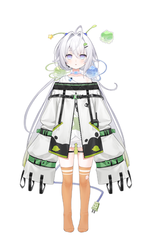

羽啾chu2u
宇宙观测中心
LOADING · · ·
 羽啾chu2u
宇宙观测中心
Universe Observation Center
羽啾chu2u
宇宙观测中心
Universe Observation Center

「电波信号接收成功！大家好！我是羽啾chu2u（Chu! Chu!），是诞生在地球的外星人！名字的Chu2u念作Chu!Chu! 如果大家是这么叫我的话！会很开心的！」 本名叫灯羽啾，昵称是啾啾/chuchu（不觉得这很像什么任务代号吗！）! 兴趣是占卜！可以理解成我在解密外星信号吧！梦想是办3D回在舞台上唱歌！ 2026年8月5日开始活动，7日正式出道！
超自然事件 / 有隐喻的作品 / 日式恐游RPG / 休闲游戏 / 唱歌 / 画画
竞技游戏 / 魂类游戏. / 多人社交 / 运动 / 唱歌 / 画画
物语系列 / 型月系列 / 东方系列 / 鸣泣之时 / 海底囚人 / Milgram / 弹丸论破
偏好！海王星 / 宝可梦
打牌！游戏王 / 影之诗
休闲！动森 / 宝森 / 星露谷
剧情！兰斯 / 人狼村 / DDLC
手游！康帕斯 / 偶像大师sc
偏好！点兔 / 来自深渊 / 学园孤岛 / 属性咖啡厅 / 悠哉日常大王 / 幸运星 / 波子汽水 / 蔷薇少女 / 侵略乌贼娘 / urara迷路帖 / 干支魂 / 国王排名 / 金牌得主 / 天体的秩序 / 魔法少女伊莉雅 / 魔保育 / 宝石宠物 / 天魔黑兔 / 漆黑的子弹 / 天使降临到我身 / 萝球社 / 游戏人生 / 街角魔族 / 龙王的工作 / 机巧少女不会受伤 / 小林家的龙女仆
特摄！假面骑士fourze / 虫王战队超王者
甜甜！无能的奈奈 / 晚安布布
剧情！奇巧计程车 / 宝石之国 / 红辣椒
好看！百合熊岚 / 魔法少女育成计划 / 春宵苦短少女前进吧
周表内容来自主页置顶动态的第一张图，每周自动检查一次，置顶动态更新后自动抓取替换。
…